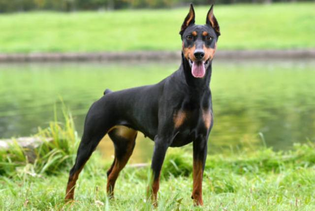

Doberman
El Doberman es un perro de gran compostura atlética, idóneo para todo tipo de entrenamiento. Se recomienda alimentarlo con comida balanceada.
Precio: $1000.00
Ver DetallesEl Doberman es un perro de gran compostura atlética, idóneo para todo tipo de entrenamiento. Se recomienda alimentarlo con comida balanceada.
Precio: $1000.00
Ver Detalles
Son muy fáciles de adiestrar, debido a su inteligencia, atención y disposición a complacer. Por ello, son muy utilizados como perros de pastoreo, guarda, policía y, por supuesto, compañía. También son animales muy valientes, instintivos y seguros de sí mismos, por lo que pueden ser buenos perros de protección
Precio: $2000.00
Ver DetallesEste tipo de perros son conocidos por ser muy sociables y cariñosos. Por ello, se utilizan como perros terapéuticos y son una excelente compañía en el hogar. Además, estos animales poseen una gran empatía con los seres humanos. Son muy comunicativos, amigables y leales.
Precio: $3000.00
Ver Detalles
Los Rottweilers son perros grandes y compactos, conocidos por su pelaje negro liso y con manchas muy definidas de color óxido. Son una de las razas más fuertes y potentes del mundo. A pesar del tamaño que tienen, los rottweilers son muy ágiles y pueden correr y saltar con facilidad.
Precio: $4000.00
Ver DetallesEl Bóxer es un perro de tamaño mediano, musculoso, robusto y ancho de pecho. Tiene un morro corto y un mentón ligeramente curvado hacia arriba. El color del pelaje corto puede ser marrón y atigrado, normalmente con algunas marcas blancas; también puede ser totalmente blanco.
Precio: $5000.00
Ver DetallesEs un perro de tamaño medio, cabeza ancha, pelo corto y color atigrado de marrón a negro. Antiguamente se utilizaba para guardar y trabajar con el ganado, posteriormente como perro de pelea hasta que se prohibieron estos combates y casi llega a extinguirse
Precio: $6000.00
Ver Detalles